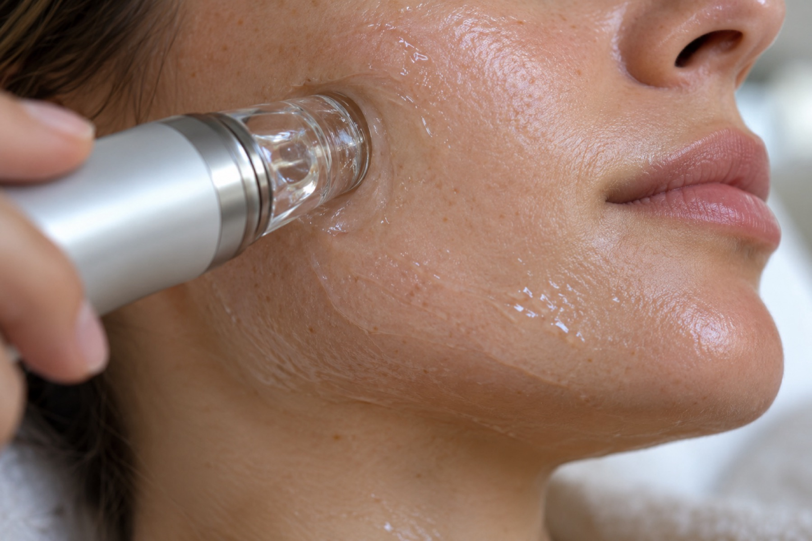

Aqua Facial / HydraFacial
Tiefenreinigung mit Wasser, einer Peeling-Komponente und Pflegewirkstoffen. Danach ist die Haut sauber, hat mehr Feuchtigkeit und wirkt frischer.
- Ziel: gründliche Reinigung und Feuchtigkeit
- Nachpflege: milde Pflege, Sonnenschutz, kein Make-up am Behandlungstag empfohlen